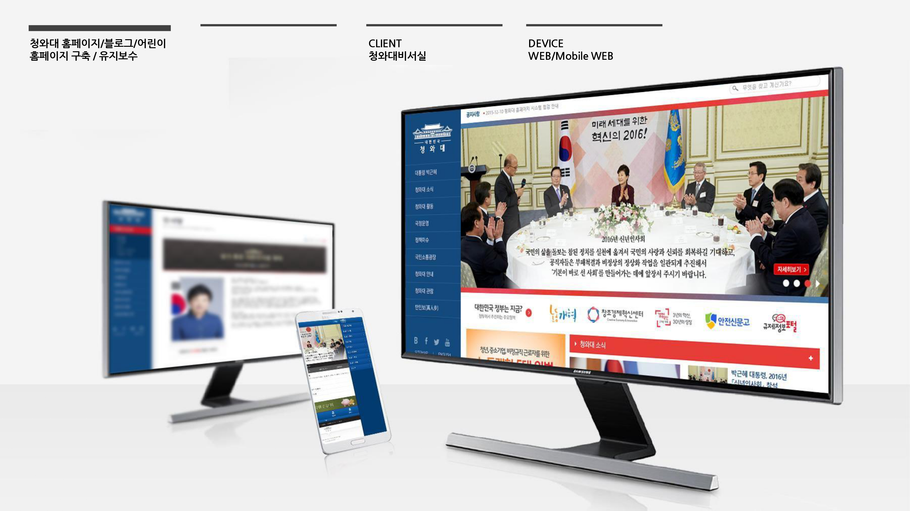
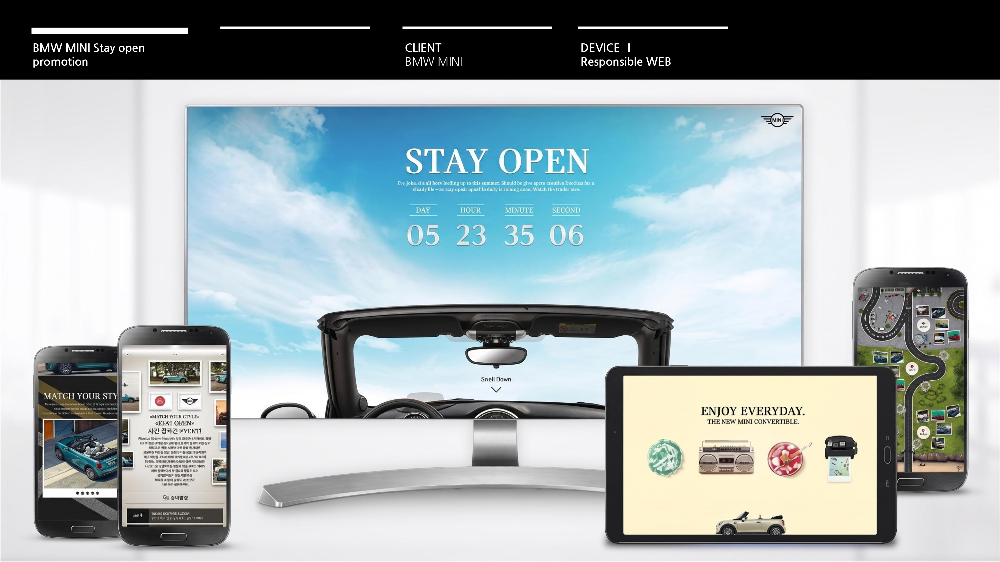
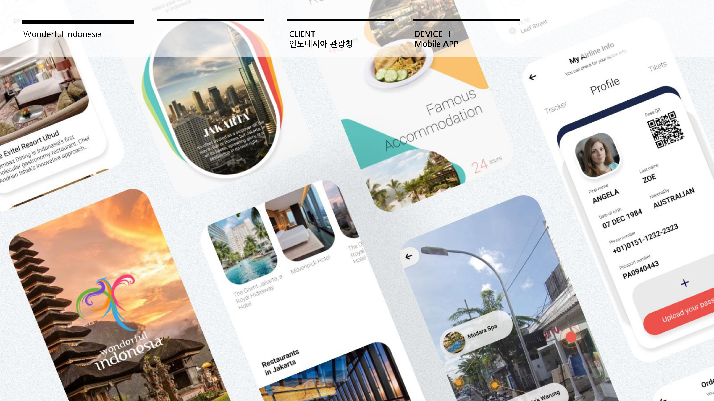
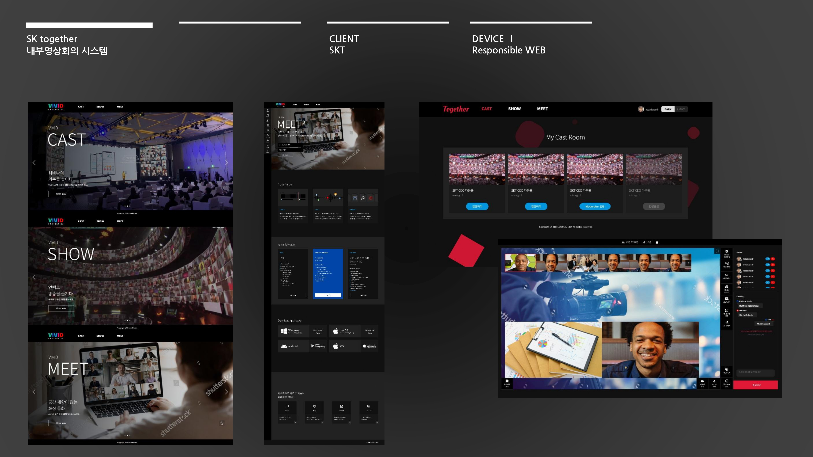
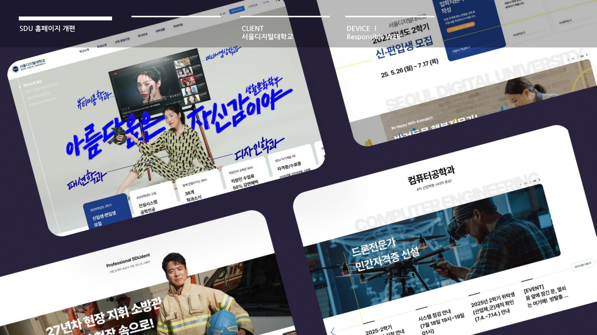
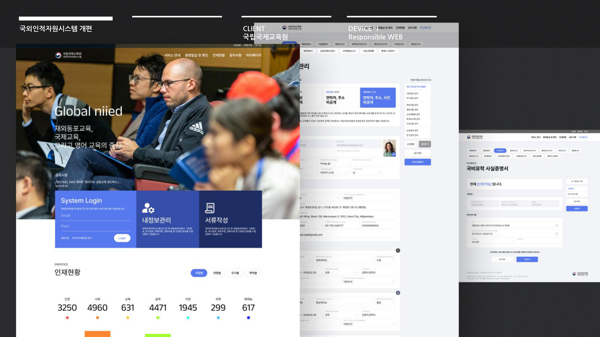
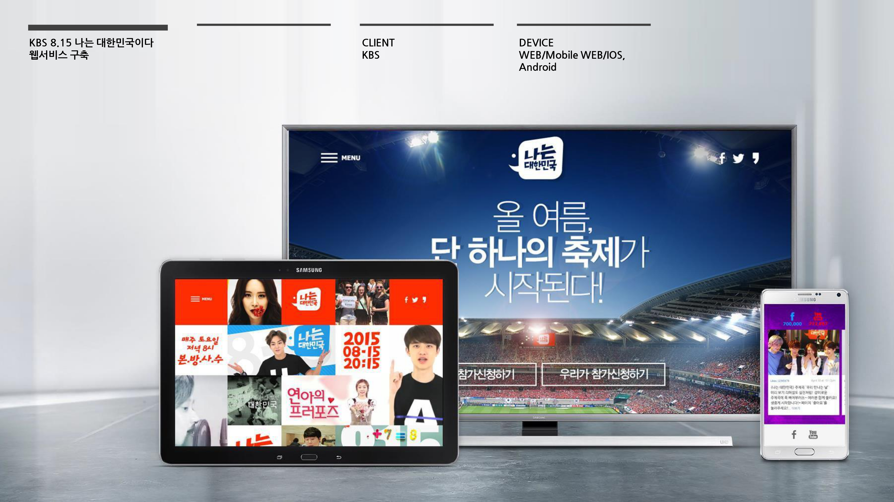

AI-Ready AX × Frontend × PM/PL
실제 경험를 바탕으로 AI와 AX를 활용,
프로젝트를 직접 수행하고 결과로 연결합니다.
Built for teams moving into AI and AX,
I lead planning, UX, publishing, and frontend as a hands-on delivery owner
Not just aligning teams, but
turning complexity into shipped results across the full frontend workflow.
서비스 목적과 사용자 흐름을 함께 설계하는 UI/UX 디자인 역량을 보유하고 있습니다.
웹, 모바일, 앱, 포털까지 실제 운영 단계까지 고려한 구조와 화면 경험을 설계합니다.
- Figma, Zeplin 기반 디자인 시스템 및 협업 구조 정리
- 웹/모바일/앱 UI 설계와 인터랙션 방향 수립
- IA, 와이어프레임, 화면 정책까지 연결된 UX 기획
- 공공, 교육, 브랜드, 플랫폼 프로젝트 전반 경험
- 관련 역량
- FigmaZeplinIAInteraction
AI를 도입하는 데서 끝내지 않고 실무 생산성과 협업 구조로 연결합니다.
반복 작업을 줄이고 결과물 품질을 끌어올리는 방향으로 AX 흐름과 AI 활용 방식을 설계합니다.
- MCP 연계, Notion 기반 협업, 자동화 흐름 설계 경험
- 디자인 및 퍼블리싱 생산성 향상 중심의 도입 전략 수립
- 프롬프트 설계부터 결과 검수까지 포함한 운영 방식 정리
- 기존 업무 프로세스에 맞춘 AX 전환 제안 및 실행
- 관련 역량
- AX WorkflowMCPNotionPrompt Design
전략부터 실행, 운영까지 프로젝트를 끝까지 끌고 가는 PM/PL 경험을 갖추고 있습니다.
다양한 이해관계자와 일정, 범위, 품질을 조율하며 프로젝트 목표를 실행 가능한 계획으로 전환합니다.
- 프로젝트 범위 정의 및 단계별 일정 관리
- 디자인, 개발, 운영 조직을 연결하는 커뮤니케이션 리딩
- 공공기관, 대기업, 글로벌 브랜드 프로젝트 총괄 경험
- 구축 이후 유지보수와 고도화까지 고려한 운영 관점 보유
- 관련 역량
- PMPLDeliveryStakeholder
해외 협업과 글로벌 팀 운영 경험을 바탕으로 커뮤니케이션 리스크를 줄입니다.
호주 체류 경험과 글로벌 조직 협업 경험을 기반으로 다국적 환경에서도 일정과 결과 중심으로 프로젝트를 운영합니다.
- 글로벌 스태프 및 해외 협업 인력 관리 경험
- 영어 커뮤니케이션 기반 업무 진행 가능
- 국가별 이해관계자와의 조율 및 보고 체계 운영
- 보험, 관광, 교육 등 글로벌 서비스 프로젝트 수행 경험
- 관련 경험
- Global TeamEnglishOverseasManagement
기획 문서와 QA 기준을 통해 프로젝트를 안정적으로 완성합니다.
요구사항 정리, 예외 흐름 정의, 품질 점검까지 함께 관리해 프로젝트 완성도를 높입니다.
- 화면정의서, 정책서, 협업 문서 작성 및 관리
- 사용자 시나리오와 예외 케이스 기반 QA 진행
- 기획-디자인-개발 간 커뮤니케이션 갭 최소화
- 오픈 전후 검수와 개선 포인트 도출 및 반영
- 관련 역량
- RequirementsQADocumentationFlow
디자인 의도를 구현 가능한 구조로 바꾸는 프론트 개발 역량을 갖추고 있습니다.
HTML, CSS/SCSS, JavaScript 기반 퍼블리싱과 인터랙션 구현 경험으로 결과물을 실제 서비스 수준까지 끌어올립니다.
- HTML5, CSS3, SCSS, JavaScript 기반 구현 경험
- 반응형 웹, 모바일 웹, WebKit 기반 프로젝트 수행
- 디자인 시스템을 실제 마크업 구조로 전환하는 역량
- 유지보수와 확장을 고려한 프론트엔드 산출물 정리
- 관련 기술
- HTML5SCSSJavaScriptResponsive






